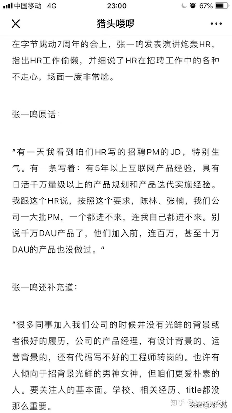
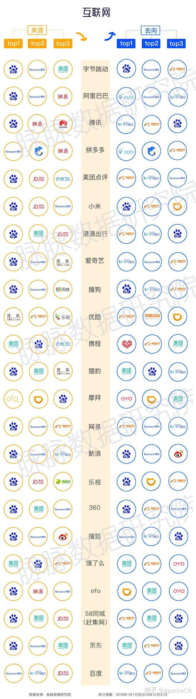

人工智能学历真的重要吗
学历：奇怪现象？
- 如果你是跨专业的学习？进入AI行业，别人会觉得你很励志很牛逼！
- 但是如果你是低学历的人，企业一般认为你就是个垃圾（普遍而已）
表现形式：
- 学历门槛（当然大家都有自己的理由，说降低面试成本 - 就是懒嘛！）
- 风险转嫁（如果你是高学历，即使被裁也就是看走眼；而学历低，就是眼界有问题）
除非你做的最前沿的技术！
- 因为最前沿，学历高的也没几个会。。你还得去教别人
- 最后高学历的学会了，差不多也是该辞退你的时候，因为公司说你是没门面的事情。
当然你还会问，那极个别的牛人成功了为什么社会没变化呢？
- 因为人家当老板了，可能忘记了自己当初那么苦。
- 毕竟他有那么多事情要做，干嘛非要帮助当初的自己呢？？？
面试： 奇异现象？
- 毕业季拼命的 刷题（leetcode、剑指 Offer）
- 更有甚者，工作n年以后，面试还是刷题，刷题
我不理解，持续刷题的意义是什么？
请问你工作用让你写这些东西吗？【没有，性能问题：数据库、分布式、GPU帮你解决】
刷题为了获取精神上的愉悦？ 【考察你的逻辑思维？狗屁】
其实不然，这东西基本上不用都会忘记，这就是为什么每一次都要复习，背写！
我在5年的工作中，从大数据、算法策略、NLP，我都没有涉及到leetcode的题目
当然除非你重构一些框架，底层需要使用到一些复杂的数据结构【极少人】
很多人从大学毕业就是这样过来的，所以他以为面试就这样，所以这样面试别人【沃日】
现在算法面试不管你什么谁，都要上来做个题目，我真想草你们这些人，真尼玛闲的蛋疼！
- 你说一个应届生没啥社会经验，你考考，我理解
- 但是人家有项目，有比赛经验，你还考数据结构，为什么这么闲呢？？
- 我就想问你们，你们招聘人不就是使用开源框架做事情，难道还手写自己框架【沃日】
公司：奇异现象？
- 悲哀的是：
- 不管毕业多久，很多人炫耀的资本还是学校
- 而更悲哀的是：
- 这些人也都习惯性的默认了这一点并继续炫耀 …… 社会现实到有些过时呢
至少是个本科，是什么意思？
- 首先，学历真的很重要。。。（至少是个本科）
- 但是这个至少是个神马意思呢？？？
就是说：
- 如果一直没招到合适的研究生和博士，就勉为其难的试试本科，然后压低工资。。
什么意思呢？
- 就是说：你能力要强，工资还要低！（甚至可能还要给某些研究生or博士汇报工作）
那么如果是专科呢，能学吗？
专科当然也是有机会的，不过基本上即使技术过了也不会招聘你的！
为什么？
- 因为正常情况下大公司不需要学历低的人，无所谓你的能力。【即使叫你去面试】
- 但是大公司的创业部门和中小型公司创业公司是需要有能力的人，所以机会还是有的。。
那么我们该怎么办呢？
调整好自己的心态，别总是觉得要去大公司什么的。
很多从大公司出来的boss 创业都是直接带一个团队出来，要么就是从社招招聘。
基本上也都是普通的大学生，只是公司大了就开始矫情，所以摆正好心态，开心学习就行
记住一点： * 工资高 * 圈子：例如 ApacheCN * 自学能力强、有自己的想法（知道自己喜欢什么、为什么学他就行）
最近有趣的新闻
最近关于学历的残酷事实
本事件只是反映了一个问题，就是人已经过饱和。【饱和只是入门，高手依然很少】
在国内，为什么我们看到的大佬都是高学历的？
话说：低学历别人也不会给你机会进入这个圈子？
例如：
- 求职这一块，求职各种刁难【高压力、低薪资】
- 在社交圈这一块，基本上是无法进入他们的圈子【为什么大佬都要花钱进MBA什么圈】
- 在融资这一块，你没学历背景基本上也融不到资
- 学历这一块，是一个相互交流的点，【例如：你也是某某某学校的？我是你学弟！】
- 国内人口流量过大，导致对人要求过于严格，甚至高于全球水平，甚至排名最高几名
今日头条张一鸣炮轰公司HR: 按你们写的JD招聘，我自己都进不来公司
现实和理想的差距 VS 老板的要求和HR行动

互联网-大公司人员的传播路径
现在我们看到的现象是：看学历、看背景
其实才是：个人能力、个人品质（其中还有各种小套路）
头条CEO张一鸣虽然说了那些话，但其实改变是非常难的，因为公司已经被某些人腐蚀了！
要改变就要大动干戈，掉血掉肉；要么就新建一个创业公司，重新找人，定义好文化规范。

解决方案：
- 其他的国家（相比而言：国外急缺这方面的人才）
- 提升自己的能力，但是短期是不可能实现的（所以这个建议是个废话，但是我想告诉有些人这是个现实问题）
- 选择换个方向，从算法转开发，说实话开发薪资并不低，并且你可以调用算法的接口，只是你叫开发工程师（别人叫算法工程师而已）【就好比找对象一样，1000个人（厉害不厉害都有）追一个妹子，所以作为一个男孩子而言，完全可以找一个其他的女孩，没必要在这个树上吊死。也不见得没有比她更好的，所以人得灵活一点】
算法只是一种思想，我们学它，可以从事它的研究，也可以从事它的应用。
一定别把自己搞死在这个地方就行。
所以？你准备好了入坑吗？